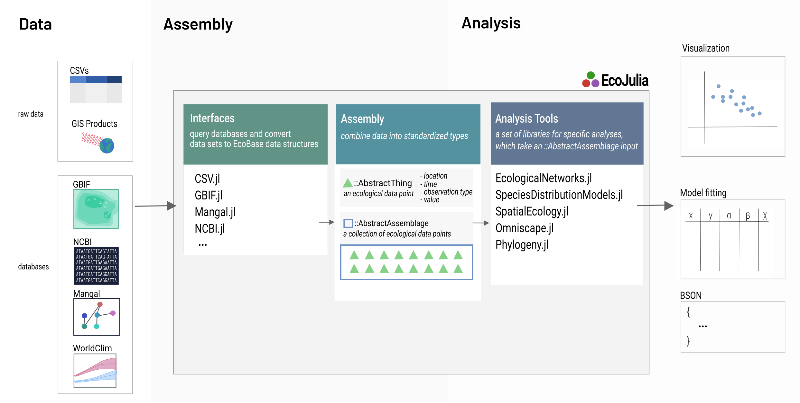

Introduction
Ecological data as it exists is very difficult to access and reuse (Poisot et al. 2019; Gonzalez and Peres-Neto 2015). Many databases of ecological and environmental data exist, but synthesizing this data into a single product suitable for analysis often remains tedious as data are not in formats that can be easily interfaced. Despite this, the assimilation of data at increasing spatial and temporal scales is necessary, both to answer pure and applied questions about biodiversity and to quantify human influence on the biosphere (Giron-Nava et al. 2017). Next-generation biodiversity monitoring will necessitate the collection and processing of increasing amounts of data from a variety of sources, requiring increasing flexibility and automation for computationally intensive tasks (Hampton et al. 2013). Macroecological data is, by definition, collected across scales which necessitate collaboration across more individuals than can feasibly coordinate with one-another. The solution to this problem is standardization (Zimmerman 2008)—developing a robust schema such that ecological data collected in a variety of contexts can be assimilated and integrated into larger scale analysis of ecological processes.
How does standardization solve this problem? Adopting a standard representation of ecological data will have three primary benefits: 1) it will enable new forms of analysis by making it easier to combine data from different sources (Heberling et al. 2021), 2) enable continuous integration of new data for next-generation biodiversity monitoring (Kühl et al. 2020), and 3) aid in reproduceability and integration of published results (Borregaard and Hart 2016; Zimmerman 2008). In order to illustrate this, we examine how bioinformatics has greatly reduced the overhead of data assimilation. We then conclude by showing how EcoJulia, a set of libraries, tools, and database interfaces written in the Julia programming language (Bezanson et al. 2015), enables simpler synthesis of macroecological data than existing tools, and is primed to become a vitally needed open-standard for ecological data.
Lessons from Bioinformatics
Data standardization
Bioinformatics faced similar challenges in standardizing data—sequence data is collected from different machines, with different methodologies and data types. The .FASTA format for representing genomic sequences, a standard maintained by NCBI, enables integration with NCBI’s standardized taxonomy identifiers further enables FASTA files to reference metadata about each sequence. Macroecological tools would be wise to use preexisting taxonomical standards as species identifiers.
Open and accessible
Publication necessitates making data available in a public repository.
Automated integration
Another message here is automation (in-situ sensors routinely uploading data to servers, servers continuously pulling satellite data), and subsequent dimensionality reduction and composition of different remotely collected data.
Toward an open standard for ecological data: EcoJulia
EcoJulia is a set of analysis packages and database interfaces for ecological data written in the Julia programming language (Bezanson et al. 2015). EcoJulia embodies an open standard for how ecological data is represented by using Julia’s type system to create a set interoperable data structures. Rest of paragraph on type hierarchies and multiple dispatch..
EcoBase is a package in EcoJulia which enables common representation of ecological data that represents the same type of information. This creates a living standard for ecological data embodied in the code defining data types. Using standardized types as a bridge between data and analysis is how we create an open standard for ecological data. This splits the processes of data aggregation and data analysis into discrete parts.

Integrating either data from a particular study, or a new database, is as simple as implementing the interface from the data source to the EcoBase data types. This will make combining data from multiple sources easier, and yield benefits for the development and implementation of novel methods, as the analysis code becomes separate from the data source (see fig. 1). In turn, this will enable specialization in development of analysis tools that can be scaled to meet the needs of next-generation biodiversity monitoring. Published data can be incorporated into public repositories containing both the origin data and the interface to transform it into EcoJulia data structures, and this combined data/interface package is all that is needed to either reproduce the results or incorporate that data into a larger data assemblage.
Why else is julia good?
- idiomatic
- high performance
- built in tools for testing
- built in tools for parallelization
- built in package manage
- shorter, more readable, more reusable code than certain competing languages
Example with SpeciesDistributionModels.jl
It would be cool if something like this worked, but it doesn’t (at the moment)
using SpeciesDistributionModels: RandomForest, RandomForestParameters
using SimpleSDMLayers
using GBIF
using Plots
records = occurrences(taxon("Picea pungens", "has_coordinates" => "true"))
boundingBox = bounds(records, padding=0.1)
temperature = worldclim(1, boundingBox...)
precipitation = worldclim(7, boundingBox...)
occurrence_layer = mask(temperature, records)
labels = collect(occurrence_layer)
features = collect(temperature, precipitation)
params = RandomForestParameters()
model = RandomForest(params)
train(model, features, labels)
sdm = predict(model, features)
plot(sdm)